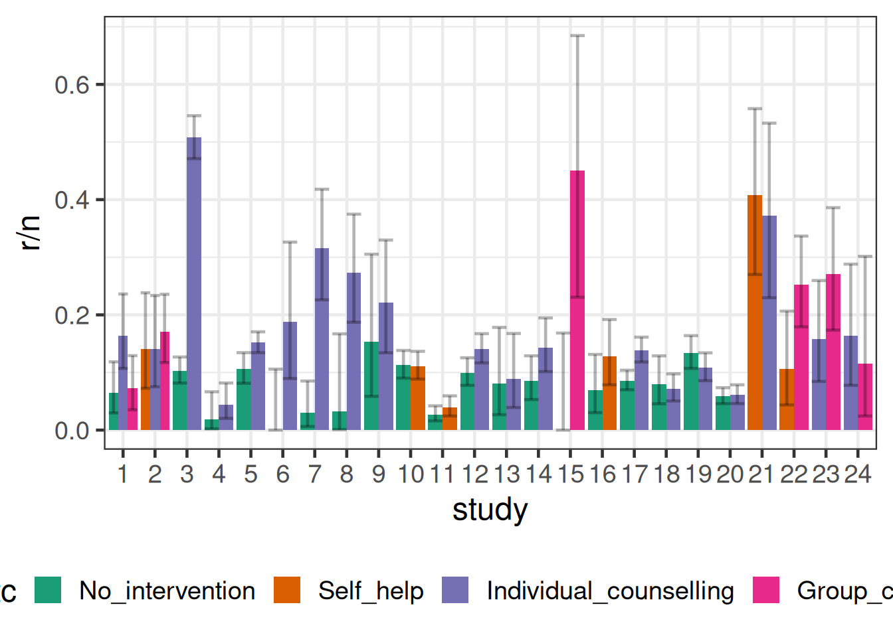
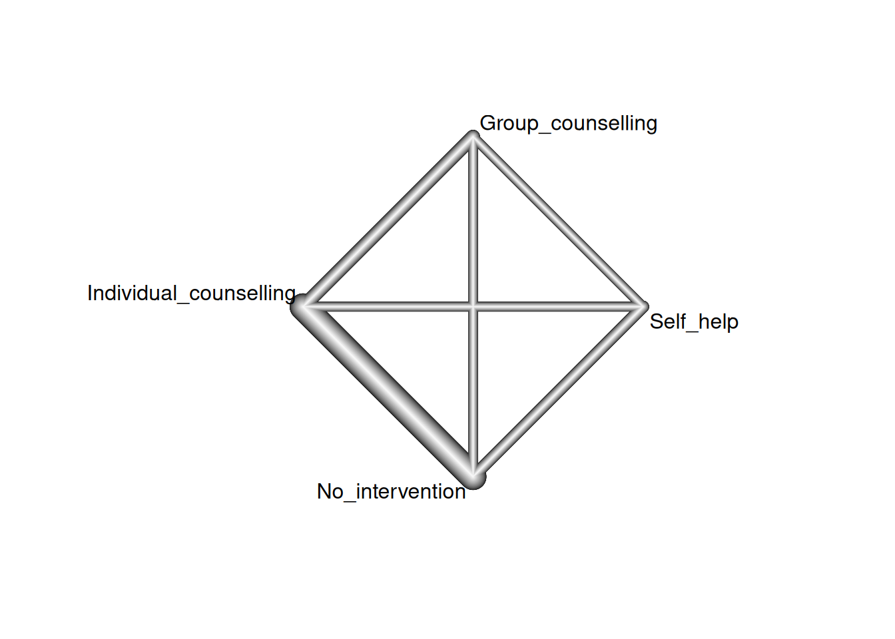
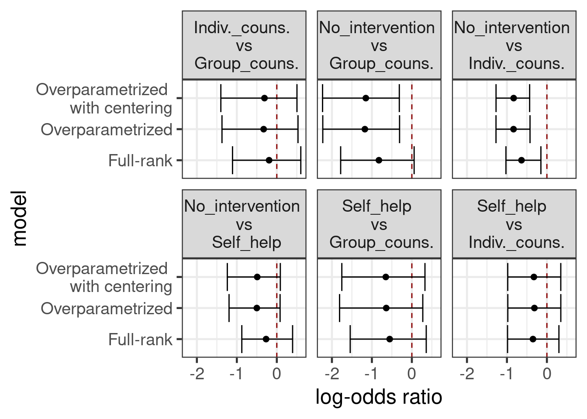
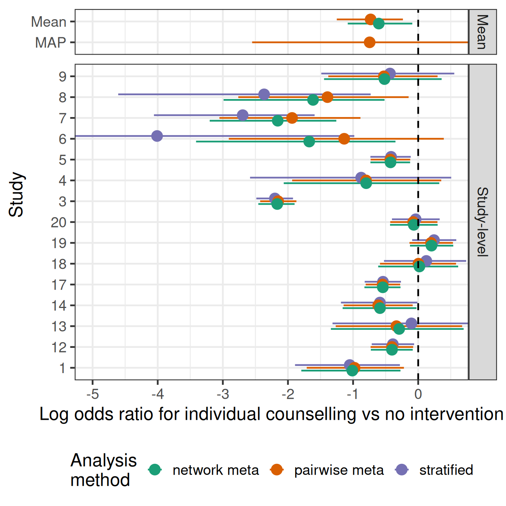
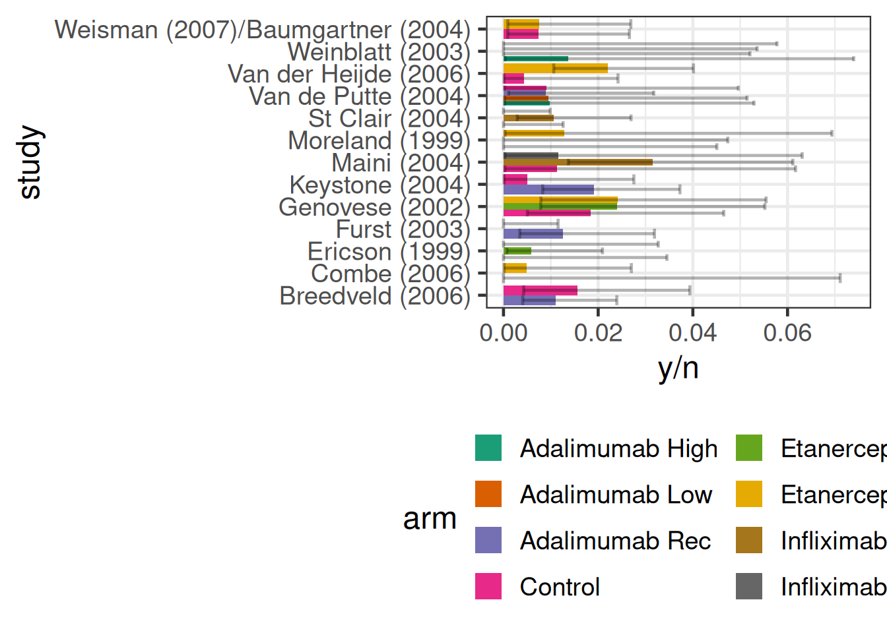

library(tidyverse)
library(brms)
library(posterior)
library(here)
library(knitr)
library(gt)
library(netmeta) # for graphing the network & other NMA utils
# instruct brms to use cmdstanr as backend and cache all Stan binaries
options(brms.backend="cmdstanr", cmdstanr_write_stan_file_dir=here("_brms-cache"))
# create cache directory if not yet available
dir.create(here("_brms-cache"), FALSE)
set.seed(5675798)
# allow for wider printouts without line-breaking
options(width=120)
control_args <- list(adapt_delta=0.95)16 Network meta-analysis
This case study covers:
- Using
brmsto perform arm-based network meta-analysis using a “two-way mixed model” approach (as opposed to the also popular contrast-based or baseline-contrast model) - Visualizing networks of evidence using function from the
multinmapackage - Setting up over-parameterized models to avoid specifying prior distributions for differences relative to a reference study or treatment (by collating two design matrices created using
model.matrix()), and how to estimate desired contrasts in this context r | trials(n) ~ ...for binomial outcomes (rout ofnpatients)- Ranking treatments based on samples from the posterior distribution
To run the R code of this section please ensure to load these libraries and options first:
16.0.1 Background: Why network meta-analysis?
Network (or multi-treatment) meta-analysis (NMA) is a term for analyses that combine the results of studies that compared several treatments and in which not all studies included all comparisons (Lu and Ades 2004). This is a frequent situation, because new drugs are often only compared to a placebo or to one commonly used current standard of care, but not to all existing current treatment options. As a result, physicians that want to choose between two treatment options often find that there are no or very few studies directly comparing them. NMA tries to address this issue by combining evidence from direct comparisons within each trial with indirect chains of comparisons across multiple trials.
Network meta-analyses have their limitations. One particular concern would be factors that modify the effects of treatments resulting in treatment by trial interactions, e.g. if pathogens developing resistance to some drugs over time, if the presence of some background therapies has a synergistic or antagonistic interaction with a drug, or if some drugs work better or worse depending on disease severity.
16.1 Data
We will use smoking cessation data (Hasselblad 1998), which consists of the number of patients \(r\) amongst the total in an study arm \(n\) that manage to stop smoking. There are 24 studies, in which different combinations of 4 interventions (no contact, self-help, individual counseling and group counseling) were tested. The aim of a network meta-analysis here would be to compare these different treatment in terms of the odds of patients managing to stop smoking.
data("smokingcessation", package = "netmeta")
recode_trt <- c("A" = "No_intervention",
"B" = "Self_help",
"C" = "Individual_counselling",
"D" = "Group_counselling")
smoking <- smokingcessation %>%
mutate(studyn = 1:n()) %>%
pivot_longer(-studyn,
names_to = c(".value", "trtid"),
names_pattern = "(.*)([1-9])") %>%
filter(!is.na(n)) %>%
transmute(
study = factor(studyn),
trtc = factor(recode_trt[treat], unname(recode_trt)),
trtn = as.numeric(trtc),
r = event,
n
)
gt_preview(smoking)| study | trtc | trtn | r | n | |
|---|---|---|---|---|---|
| 1 | 1 | No_intervention | 1 | 9 | 140 |
| 2 | 1 | Individual_counselling | 3 | 23 | 140 |
| 3 | 1 | Group_counselling | 4 | 10 | 138 |
| 4 | 2 | Self_help | 2 | 11 | 78 |
| 5 | 2 | Individual_counselling | 3 | 12 | 85 |
| 6..49 | |||||
| 50 | 24 | Group_counselling | 4 | 3 | 26 |
smoking %>%
ggplot(aes(x=study, y=r/n, fill=trtc, group=trtc,
ymin=qbeta(p=0.025, shape1=r, shape2=1+n-r),
ymax=qbeta(p=0.975, shape1=r+1, shape2=n-r))) +
geom_bar(stat = "identity", position = "dodge") +
geom_errorbar(position = "dodge", alpha=0.3) +
theme(legend.position="bottom")
The totality of evidence about the treatments and their relative efficacy is commonly known as the evidence network. A common graphical representation, shown below, visualizes this network of treatments (the nodes) along with edges indicating the presence or absence of direct evidence comparing pairs of treatments from randomized trials. Below, the thickness of the edges is determined by the number of trials comparing each pair of treatments.
nm <- netmeta(pairwise(treat = trtc, event = r, n = n, studlab = study,
data = smoking))
netgraph(nm)
16.2 Model description
We will first describe the arm-based (aka “two-way mixed model”) approach to NMA advocated by Piepho (Piepho, Williams, and Madden 2012). It has some advantages over more commonly used NMA approach that analyzes treatment contrasts (Lu and Ades 2004), in terms of ease of use and familiarity (the two-way linear mixed model is of course very familiar). The latter approach, however, is widely used in health technology assessments, for example by the UK NICE. The NICE decision support unit has published methodological guidance on how to use this method in practice (Dias et al. 2014).
Suppose we had individual patient data for patients \(k=1,\ldots,N_{ij}\) randomly assigned to treatment \(j\) in trial \(i\), for \(i = 1,\ldots, n\) and \(j = 1,\ldots, m\). A two-way linear mixed model would model the outcome of interest \(Y_{ijk}\) as \[ g(E(Y_{ijk})) = \underbrace{\alpha_i}_{\text{fixed main effect of trial }i} + \underbrace{\beta_j}_{\text{fixed main effect of treatment }j} + \underbrace{u_{ij}}_{\text{random effect of trial on treatment}},\] where \(g\) is a link function such as the logit link in case of bernoulli data.
The random effects \(u_{ij}\) have mean zero and describe that the effect of treatments is allowed to vary across trials. If we wanted to assume the same effect of all treatment across all trials, we could instead omit this term. When we include it, we will ideally want to allow for the possibility that if one treatment has better outcomes in a trial, then other treatments might also. To achieve that we assume that for the trials \(i=1,\ldots,n\) there is a multivariate normal random effect \(\boldsymbol{U}_i \sim \text{MVN}(\boldsymbol{0}, \boldsymbol{\Sigma})\), where \(\Sigma\) is some covariance matrix that is either unstructured or has some particular structure (e.g. compound symmetric). In other words, the components of the random vector \(\boldsymbol{U}_i\) for a trial \(i\) are correlated.
16.2.1 Network meta-analysis with summaries for each arm
In case we have summary information by treatment arm, we will (just as for traditional arm-based meta-analyses) often be able to assume a normal sampling distribution for least squares means for each arm from linear models, log-odds, log-rates or log-hazard rates. We will denote these estimates for each arm by \(\hat{\theta}_{ij}\) and their standard error by \(\text{SE}(\hat{\theta}_{ij})\). We then assume \(\theta_{ij} = \alpha_i + \beta_j + u_{ij}\) as above and that \(\hat{\theta}_{ij} \sim N(\theta_{ij}, \text{SE}(\hat{\theta}_{ij}))\).
Alternatively, for a binary outcome, we can use that the number of patients with a success follows a binomial distribution and we would use a regression equation like above for the logit-probability \(\theta_{ij} = \alpha_i + \beta_j + u_{ij}\) for each arm.
TO BE DETERMINE WHAT TO DO FOR SURVIAL: Less clear, could one work with log-cumulative-hazard function (under a parametric model?)? Maybe one could get that from KM curves? Log-(or logit-?)survival probabilities at fixed points of time (e.g. 1-year)? Discussed by some papers such as this one (Combescure et al. 2012). Perhaps models fitted to reconstructed patient-level data/KM curves via, standard parametric models, fractional polynomial models and/or spline-based models? What about non-proportional hazards?
16.2.2 Patient-, arm- or trial-level covariates
As needed, the regression equation \(\alpha_i + \beta_j + u_{ij}\) can be extended by allowing for patient level covariates \(\boldsymbol{x}_{ijk}\) (in case we work with individual patient data), arm-level covariates \(\boldsymbol{x}_{ij}\) or study-level covariates \(\boldsymbol{x}_i\).
16.2.3 Borrowing information from real-world data or other trials
If we have a fixed effect for the \(\alpha_i\), then borrowing information between trials runs into the identifiability issues between the \(\alpha_i\) and the \(u_{ij}\). In a frequentist approach we cannot resolve these issues. When we take a Bayesian approach, this identifiability issue will still severely limit how much information we can obtain about the distribution of the \(u_{ij}\) (while we would by definition not borrow information about the \(\alpha_i\)) and the results will be sensitive to the choice of prior distributions.
We could borrow information across trials, we replace the trial main effect by an intercept term and a random trial effect on the intercept. However, then we will be conducting a meta-analysis, in which the causal effects of treatments are no longer just judged based on randomized within-trial comparisons. We would then also to an extent do comparisons across treatment arms from different trials. Besides the limitations any NMA is subject to, such comparisons are additionally affected by any prognostic factors that change the expected outcomes for a treatment in different trials. Such prognostic factors are much more common than effect modifiers that would cause trial by treatment interactions, and we know that to some extent such differences across trials will exist. Examples include improving (or worsening) patient outcomes due to better treatments or access to healthcare, different inclusion/exclusion criteria of different trials, and differences in recruited patient populations in terms of e.g. background therapy, disease severity, country/region and comorbidities. While we may hope that a random trial effect on the intercept would capture random variation in these aspects across trials, we have to be concerned that there could be a systematic bias in favor of some treatments in a NMA - especially if studies for some treatments were conducted later in time than for other treatments.
16.3 Implementation
In this case, we have a binomial outcome. brms provides the y | trials(n) notation to indicate y successes out of n trials, while in stats::glm the way of specifying this is a little less intuitive: glm( cbind(y, n-y)~... ).
We will now try implement the network meta-analysis model we described above. In the process, we will discover some things that did not make a difference in a frequentist setting, but matter in the Bayesian setting with respect to how we can the most easily specify our prior knowledge (or lack thereof).
16.3.1 Reference categories matter for setting priors
Firstly, before we even think too much about any prior distributions, let see how brms parameterizes the model, if we specify it in the most obvious way by just writing 0 + study + trtc + (0 + trtc |study):
brmfit <- brm(
data = smoking,
formula = r | trials(n) ~ 0 + study + trtc + (0 + trtc || study),
family = binomial(),
control = control_args,
prior = prior(class = b, normal(0, 3.14)),
silent = 2,
refresh = 0
)As we can see from the summary of the fitted model, there are coefficients for all study main effects, but not for all treatments: treatment 1 is omitted, and the coefficients for remaining treatments now represent contrasts against treatment 1. (Conversely, if we had instead written 0 + trtc + study + (0+trtc|study), then there would have been a coefficient for all treatments, but the study effects would have been parametrized in terms of contrasts with study 1.
summary(brmfit) Family: binomial
Links: mu = logit
Formula: r | trials(n) ~ 0 + study + trtc + (0 + trtc || study)
Data: smoking (Number of observations: 50)
Draws: 4 chains, each with iter = 2000; warmup = 1000; thin = 1;
total post-warmup draws = 4000
Multilevel Hyperparameters:
~study (Number of levels: 24)
Estimate Est.Error l-95% CI u-95% CI Rhat Bulk_ESS Tail_ESS
sd(trtcNo_intervention) 0.65 0.37 0.05 1.43 1.00 343 1155
sd(trtcSelf_help) 0.42 0.38 0.01 1.41 1.00 1195 1847
sd(trtcIndividual_counselling) 0.55 0.30 0.02 1.17 1.01 339 995
sd(trtcGroup_counselling) 0.94 0.68 0.07 2.66 1.01 823 1242
Regression Coefficients:
Estimate Est.Error l-95% CI u-95% CI Rhat Bulk_ESS Tail_ESS
study1 -2.59 0.47 -3.50 -1.66 1.00 754 1790
study2 -2.23 0.42 -3.06 -1.38 1.00 1443 2155
study3 -1.24 0.71 -2.37 -0.01 1.00 384 1132
study4 -3.74 0.55 -4.88 -2.72 1.00 2133 2602
study5 -2.19 0.38 -3.00 -1.41 1.01 1317 1719
study6 -2.69 0.73 -4.25 -1.41 1.00 692 1982
study7 -2.10 0.73 -3.53 -0.83 1.00 368 1230
study8 -2.05 0.65 -3.41 -0.91 1.00 613 1846
study9 -1.78 0.47 -2.74 -0.87 1.00 2704 2682
study10 -2.21 0.44 -3.07 -1.25 1.00 1248 1412
study11 -3.46 0.45 -4.31 -2.49 1.00 1387 1512
study12 -2.27 0.39 -3.05 -1.45 1.00 1744 2127
study13 -2.71 0.51 -3.72 -1.68 1.00 2748 2841
study14 -2.34 0.41 -3.15 -1.52 1.00 1627 1632
study15 -2.18 1.06 -4.56 -0.38 1.00 987 2046
study16 -2.30 0.50 -3.29 -1.26 1.00 1771 1852
study17 -2.36 0.37 -3.09 -1.58 1.00 1312 1851
study18 -2.81 0.46 -3.68 -1.85 1.00 929 2151
study19 -2.27 0.44 -3.13 -1.45 1.00 711 2377
study20 -3.03 0.42 -3.88 -2.20 1.00 1026 2107
study21 -0.82 0.48 -1.76 0.14 1.00 1458 1731
study22 -2.18 0.59 -3.33 -1.02 1.00 1363 2161
study23 -2.03 0.58 -3.15 -0.88 1.00 1483 2216
study24 -2.39 0.62 -3.65 -1.19 1.00 1633 2241
trtcSelf_help 0.25 0.38 -0.58 1.00 1.00 1148 1236
trtcIndividual_counselling 0.61 0.25 0.09 1.08 1.00 750 982
trtcGroup_counselling 0.81 0.58 -0.32 2.07 1.00 1347 2043
Draws were sampled using sample(hmc). For each parameter, Bulk_ESS
and Tail_ESS are effective sample size measures, and Rhat is the potential
scale reduction factor on split chains (at convergence, Rhat = 1).Is this a problem? In the frequentist context, this issue with the form of the design matrix for population-level effects is not important, because the pairwise treatment contrasts are uniquely estimable regardless of whether constraints such as \(\beta_1 = 0\) are employed.
However, if we wanted to imply some prior information or lack thereof, it may impact our preference for the specification of the population-level terms. For example, if we had some prior information (external to the likelihood) on a particular contrast between a pair of treatments, we would favor the parametrization above, in which the treatment terms are parametrized in terms of contrasts.
16.3.2 Setting priors is easier in an over-parameterized model
Another possibility is to over-parametrize the model and have a main effect for each study (i.e. main effects for all studies study1 to study24 are present) and each treatment. The main rationale for this would be symmetry in how we set our prior distributions. I.e. we do not want to set our priors in a way that would somehow favor one treatment (or study - which will have studied some subset of treatments = might again favor somehow treatment) over any of the others. Unlike the specification above, the marginal variance of the each arm of each study will be constant in this approach.
This can be achieved by creating dummy variables for each treatment group and thereby enforcing the paramterization. We then specify our model as 0 + study + trtcA + trtcB + trtcC + trtcD + (0 + trtc | study). The code below constructs the dummy variables and corresponding formula in an automated way.
B <- model.matrix(~ 0 + trtc, data = smoking)
S <- model.matrix(~ 0 + study, data = smoking)
smoking_with_dummies <- bind_cols(
dplyr::select(smoking, r, n, study, trtc),
as_tibble(B),
as_tibble(S)
)
f <- as.formula(paste(
"r | trials(n) ~ 0 + study +",
paste(colnames(B), collapse = " + "),
"+ (0 + trtc || study)"
))
# could also do:
# f <- as.formula(paste(
# "r | trials(n) ~ 0 + trtc +",
# paste(colnames(S), collapse = " + "),
# "+ (0 + trtc || study)"
# ))
brmfit_with_dummies <- brm(data = smoking_with_dummies,
formula = f,
family = binomial(),
control = control_args,
prior = prior(class=b, normal(0, 3.14)),
silent = 2,
refresh = 0)When we now summarize the model fit, we have regression coefficients for all treatment groups and studies.
summary(brmfit_with_dummies) Family: binomial
Links: mu = logit
Formula: r | trials(n) ~ 0 + study + trtcNo_intervention + trtcSelf_help + trtcIndividual_counselling + trtcGroup_counselling + (0 + trtc || study)
Data: smoking_with_dummies (Number of observations: 50)
Draws: 4 chains, each with iter = 2000; warmup = 1000; thin = 1;
total post-warmup draws = 4000
Multilevel Hyperparameters:
~study (Number of levels: 24)
Estimate Est.Error l-95% CI u-95% CI Rhat Bulk_ESS Tail_ESS
sd(trtcNo_intervention) 0.60 0.34 0.02 1.29 1.01 415 774
sd(trtcSelf_help) 0.44 0.39 0.02 1.48 1.00 1843 2291
sd(trtcIndividual_counselling) 0.59 0.32 0.04 1.22 1.01 373 850
sd(trtcGroup_counselling) 1.02 0.73 0.07 2.87 1.00 1002 1316
Regression Coefficients:
Estimate Est.Error l-95% CI u-95% CI Rhat Bulk_ESS Tail_ESS
study1 -0.50 0.74 -1.89 0.98 1.00 424 857
study2 -0.19 0.73 -1.60 1.29 1.01 455 852
study3 0.82 0.85 -0.83 2.42 1.00 359 708
study4 -1.66 0.81 -3.24 -0.06 1.00 543 1148
study5 -0.03 0.74 -1.44 1.45 1.01 374 808
study6 -0.68 0.91 -2.56 1.03 1.00 541 1165
study7 -0.06 0.89 -1.88 1.58 1.00 406 998
study8 -0.01 0.87 -1.81 1.60 1.00 484 1037
study9 0.34 0.77 -1.13 1.84 1.01 456 1066
study10 -0.09 0.74 -1.45 1.40 1.01 459 807
study11 -1.36 0.74 -2.79 0.12 1.01 438 1014
study12 -0.12 0.72 -1.44 1.36 1.01 375 768
study13 -0.58 0.80 -2.13 1.07 1.01 433 964
study14 -0.20 0.73 -1.60 1.29 1.01 442 932
study15 -0.33 1.25 -3.10 1.81 1.00 935 1839
study16 -0.22 0.75 -1.68 1.25 1.01 441 1067
study17 -0.21 0.72 -1.53 1.30 1.01 411 836
study18 -0.65 0.79 -2.16 0.92 1.01 391 924
study19 -0.11 0.80 -1.61 1.46 1.01 364 782
study20 -0.86 0.76 -2.32 0.67 1.01 388 812
study21 1.22 0.75 -0.27 2.72 1.01 452 784
study22 -0.19 0.81 -1.75 1.41 1.00 561 1371
study23 -0.06 0.84 -1.69 1.58 1.01 554 1215
study24 -0.43 0.86 -2.16 1.29 1.00 555 1080
trtcNo_intervention -2.31 0.64 -3.57 -1.05 1.01 349 683
trtcSelf_help -1.80 0.68 -3.15 -0.49 1.01 412 752
trtcIndividual_counselling -1.48 0.64 -2.74 -0.24 1.01 344 612
trtcGroup_counselling -1.13 0.84 -2.71 0.50 1.00 499 1127
Draws were sampled using sample(hmc). For each parameter, Bulk_ESS
and Tail_ESS are effective sample size measures, and Rhat is the potential
scale reduction factor on split chains (at convergence, Rhat = 1).While the coefficients for each treatment have changed compared to the previous section, we should not actually look at the coefficients for each treament main effect, but at their contrasts. When we look at those, we see that the models lead to very similar inference (despite us not even setting any priors for Model 0).
# utility function to estimate all pairwise contrasts between the main effects
# for the variable named "trtc"
contrast_draws <- function(brmfit, variable = "trtc"){
trts <- levels(brmfit$data[[variable]])
ntrt <- nlevels(brmfit$data[[variable]])
all_pairs <- combn(1:ntrt, 2)
L_trt <- t(apply(
all_pairs, 2, function(x){
out <- numeric(ntrt)
out[x[1]] <- 1
out[x[2]] <- -1
out
}
))
colnames(L_trt) <- paste0(variable, trts)
X <- standata(brmfit)$X
L_study <- matrix(0, nrow = nrow(L_trt), ncol = sum(!grepl(variable, colnames(X))))
# if the treatment variable is not dummy coded for every level then
# we need to drop the base category as this is masked by study
if(ncol(L_trt) == sum(grepl(variable, colnames(X)))){
L <- cbind(L_study, L_trt)
} else{
L <- cbind(L_study, L_trt[,-1])
}
colnames(L) <- colnames(X)
# labels for the contrasts
labs <- apply(combn(trts, 2), 2, paste, collapse = " vs ")
rownames(L) <- labs
B <- as_draws_matrix(brmfit, variable = "^b_", regex = TRUE)
gamma_draws <- B %*% t(L)
# convert to posterior object
as_draws_matrix(gamma_draws)
}
summarize_contrasts <- function(brmfit, model_name = "model", variable = "trtc", ...){
relocate(
mutate(summarize_draws(contrast_draws(brmfit, variable = variable), ...), model = model_name),
model
)
}
bind_rows(
summarize_contrasts(brmfit, "Full-rank model"),
summarize_contrasts(brmfit_with_dummies, "Overparametrized model")
) %>%
gt() %>%
fmt_number(where(is.numeric), decimals=2)| model | variable | mean | median | sd | mad | q5 | q95 | rhat | ess_bulk | ess_tail |
|---|---|---|---|---|---|---|---|---|---|---|
| Full-rank model | No_intervention vs Self_help | −0.25 | −0.26 | 0.38 | 0.34 | −0.86 | 0.38 | 1.00 | 1,132.68 | 1,224.09 |
| Full-rank model | No_intervention vs Individual_counselling | −0.61 | −0.61 | 0.25 | 0.24 | −1.00 | −0.18 | 1.00 | 736.55 | 974.57 |
| Full-rank model | No_intervention vs Group_counselling | −0.81 | −0.80 | 0.58 | 0.49 | −1.76 | 0.11 | 1.00 | 1,336.00 | 2,032.44 |
| Full-rank model | Self_help vs Individual_counselling | −0.36 | −0.35 | 0.40 | 0.37 | −1.01 | 0.29 | 1.00 | 1,426.85 | 2,423.74 |
| Full-rank model | Self_help vs Group_counselling | −0.56 | −0.54 | 0.62 | 0.51 | −1.60 | 0.40 | 1.00 | 1,859.64 | 2,005.83 |
| Full-rank model | Individual_counselling vs Group_counselling | −0.20 | −0.18 | 0.56 | 0.46 | −1.13 | 0.66 | 1.00 | 1,813.96 | 1,889.17 |
| Overparametrized model | No_intervention vs Self_help | −0.51 | −0.48 | 0.40 | 0.38 | −1.19 | 0.10 | 1.00 | 1,905.30 | 2,541.38 |
| Overparametrized model | No_intervention vs Individual_counselling | −0.84 | −0.82 | 0.25 | 0.24 | −1.27 | −0.45 | 1.00 | 3,561.07 | 2,828.21 |
| Overparametrized model | No_intervention vs Group_counselling | −1.18 | −1.14 | 0.65 | 0.52 | −2.26 | −0.26 | 1.00 | 1,830.85 | 1,920.40 |
| Overparametrized model | Self_help vs Individual_counselling | −0.33 | −0.33 | 0.41 | 0.39 | −1.00 | 0.32 | 1.00 | 2,029.60 | 2,738.66 |
| Overparametrized model | Self_help vs Group_counselling | −0.67 | −0.65 | 0.68 | 0.56 | −1.80 | 0.33 | 1.00 | 1,713.13 | 1,885.17 |
| Overparametrized model | Individual_counselling vs Group_counselling | −0.34 | −0.29 | 0.65 | 0.51 | −1.42 | 0.57 | 1.00 | 1,896.81 | 1,880.14 |
Note also that it is hard to interpret the study main effects in these models. We could try to make them a little more interpretable by making them represent something like the average expected outcome across treatment groups (i.e. if we leave out the treatment main effects, we get a predicted outcome that is between the predicted outcomes for the treatment groups). For this purpose we encode the dummy for each treatment group as \(0.5\) vs. \(-0.5\) (if it is not that treatment group). However, treatment main effect coefficients should still be looked at in contrast to each other.
smoking_with_centered_dummies <- bind_cols(
dplyr::select(smoking, r, n, study, trtc),
as_tibble(B - 0.5),
as_tibble(S)
)
brmfit_with_centered_dummies <- brm(
data = smoking_with_centered_dummies,
formula = f,
family = binomial(),
control = control_args,
prior = prior(class=b, normal(0, 3.14)),
silent = 2,
refresh = 0
)With the relatively low-information priors we’ve chosen here, all three of these models produce similar results
all_contrasts <- tibble(
model_name = c("Full-rank model",
"Overparametrized model",
"Overparametrized model with centering"),
brmfit = list(brmfit, brmfit_with_dummies, brmfit_with_centered_dummies)
) %>%
mutate(contrasts = map2(brmfit, model_name, summarize_contrasts)) %>%
select(-brmfit) %>%
unnest(contrasts)
all_contrasts %>%
mutate(model=str_remove_all(model, " model"),
model=str_replace_all(model, "with", "\nwith"),
variable=str_replace_all(variable, "vs", "\nvs\n"),
variable=str_replace_all(variable, "counselling", "couns."),
variable=str_replace_all(variable, "Individual", "Indiv."),
) %>%
ggplot(aes(x=median, y=model, xmin=q5, xmax=q95)) +
geom_vline(xintercept=0, color="darkred", linetype=2) +
geom_point() +
geom_errorbarh() +
xlab("log-odds ratio") +
facet_wrap(~variable)
16.3.3 Ranking treatments and the probability of being the best treatment
Probability that each treatment is best is straightforward in any of these approaches. To illustrate:
B <- as_draws_matrix(brmfit_with_dummies, variable = "b_trtc", regex = TRUE)
best_idx <- apply(B, 1, which.max)
trts <- levels(smoking$trtc)
best_trt <- factor(trts, levels=trts)[best_idx]
prob_best <- prop.table(table(best_trt))
gt(arrange(as.data.frame(prob_best), -Freq)) %>% fmt_percent(Freq)| best_trt | Freq |
|---|---|
| Group_counselling | 70.30% |
| Individual_counselling | 23.40% |
| Self_help | 6.30% |
| No_intervention | 0.00% |
16.3.4 Detailed look at a pairwise contrast
In some situations, there may be a particular treatment contrast that is of special interest. In some such scenarios, where we have several This is to illustrate that by including indirect evidence, we can enhance our inference for a pairwise contrast of interest, relative to a simple pairwise meta-analysis.
The following analyses are compared, in terms of their estimates of the relative effect (log odds ratio) of individual counselling versus no intervention:
- Network meta-analysis model (
brmfit1above) - Pairwise meta-analysis model (currently
RBesTis used here, but we could equally usebrms) - “Stratified” analysis of the contrast separately in each study, using independent beta-binomial models
Show the code
# identify the A vs C studies
ac_studies <- smoking %>%
filter(trtc %in% c("No_intervention", "Individual_counselling")) %>%
add_count(study, name = "num_treatments") %>%
filter(num_treatments == 2) %>%
arrange(study, trtc)
# summarize the A vs C log odds ratio using Beta-Binomial models independently
# across studies and arms
arm_level_beta_binom <- ac_studies %>%
rowwise() %>%
mutate(p = map2(r, n, ~ rbeta(10000, r + 0.5, n - r + 0.5))) %>%
dplyr::select(study, trtc, p) %>%
pivot_wider(names_from = trtc, values_from = p)
study_effects <- arm_level_beta_binom %>%
mutate(log_odds_ratio = map2(No_intervention, Individual_counselling,
~ log(.x) + log(1 - .y) - log(1 - .x) - log(.y)),
out = map(log_odds_ratio, ~ summarize_draws(matrix(.), mean, sd, ~ quantile(., probs = c(0.025, 0.5, 0.975))))) %>%
transmute(study = factor(study), out) %>%
unnest(out) %>%
dplyr::select(-variable)
# pairwise meta-analysis of the log odds ratios based on summary statistics
rbest_fit <- RBesT::gMAP(cbind(mean, sd) ~ 1 | study,
data = study_effects,
tau.dist = "HalfNormal",
tau.prior = 1,
beta.prior = cbind(0,2))
# study-level treatment-effect estimates from RBesT
fitted_rbest <- bind_cols(dplyr::select(study_effects, study), fitted(rbest_fit))
# study-level treatment effect estimates from the NMA model
nd <- inner_join(smoking_with_dummies,
dplyr::select(ac_studies, study, trtc),
c("study", "trtc")) %>%
mutate(n = 1)
lp <- posterior_epred(brmfit, newdata = nd)
lpA <- lp[,nd$trtc == "No_intervention"]
lpC <- lp[,nd$trtc == "Individual_counselling"]
lor <- log(lpA) + log(1 - lpC) - log(1 - lpA) - log(lpC)
fitted_nma <- bind_cols(
dplyr::select(study_effects, study),
dplyr::select(summarize_draws(lor, mean, sd, ~ quantile(., probs = c(0.025, 0.5, 0.975))), -variable)
)
# mean and MAP treatment effect estimates from RBesT
mean_rbest <- summary(rbest_fit, type="response")[c("theta.pred", "theta")] %>%
do.call(what = "rbind") %>%
as_tibble(rownames = "study") %>%
mutate(type = "pairwise meta",
study = c("theta_resp_pred" = "MAP", "theta_resp" = "Mean")[study])
# mean treatment effect estimate from NMA model
mean_nma <- summarize_contrasts(brmfit, variable = "trtc", model_name = "nma", mean, sd,
~ quantile(., probs = c(0.025, 0.5, 0.975))) %>%
filter(variable == "No_intervention vs Individual_counselling") %>%
mutate(study = "Mean", type = "network meta")
all_ests <- bind_rows(
mutate(study_effects, type = "stratified", estimate_type = "Study-level"),
mutate(fitted_rbest, type = "pairwise meta", estimate_type = "Study-level"),
mutate(fitted_nma, type = "network meta", estimate_type = "Study-level"),
mutate(mean_rbest, estimate_type = "Mean"),
mutate(mean_nma, estimate_type = "Mean")
)
ggplot(all_ests, aes(y = study, x = mean, xmin = `2.5%`, xmax = `97.5%`,
group = type, color = type)) +
geom_pointrange(position = position_dodge(0.4)) +
facet_grid(estimate_type ~ ., space = "free", scales = "free") +
geom_vline(xintercept = 0, linetype = "dashed") +
scale_x_continuous(breaks=seq(-5,1,by=1)) +
coord_cartesian(xlim=c(-5,0.5)) +
labs(x = "Log odds ratio for individual counselling vs no intervention",
y = "Study", color = "Analysis\nmethod") +
theme(legend.position = "bottom")
16.4 Conclusion
Arm-based (network-)meta-analysis approaches compare favorably with contrast based approaches in many situations and fit very easily into the Bayesian regression modeling machinery provided by brms. The main challenge we face is how one should parametrize the model in order to be able to specify prior distributions easily, for which we showed several options.
For NMA, Bayesian approaches are very popular due to the ease with which one can obtain inference about various quantities of interest (e.g. ranking of treatments, probability that a treatment is the best one) via transformations of the MCMC samples from the posterior distribution.
TBD: Further topics might include including observational data (aka real-world Exploiting that some drugs are in the same class, that some arms are different doses of the same drug, or when we have subgroup results from the same study.
16.5 Exercises
16.5.1 Excercise 1
We will use the data on the occurrence of malignancy anti-tumour necrosis factor (anti-TNF) drugs used in the paper by Warren, Abrams, and Sutton (2014). We have information for each arm of 13 studies of three different anti-TNF drugs (etanercept, adalimumab and infliximab) on how many patients developed a malignancy y out of the total number of patients in an arm n. It is common in drug development to simplistically reduce what is in truth a time-to-event process of adverse event occurrence into a binomial problem. In practice, we should be cautious about this simplification, because differential drop-out could lead to biased conclusions and we will by necessaity get variation in effect measures for binomial outcomes across studies of different duration even if the time-to-event distributions are identical across studies.
antiTNF <- tibble(
study = c("Ericson (1999)", "Ericson (1999)", "Ericson (1999)",
"Moreland (1999)", "Moreland (1999)", "Moreland (1999)",
"Genovese (2002)", "Genovese (2002)", "Genovese (2002)",
"Combe (2006)", "Combe (2006)", "Van der Heijde (2006)",
"Van der Heijde (2006)", "Weisman (2007)/Baumgartner (2004)",
"Weisman (2007)/Baumgartner (2004)", "Furst (2003)", "Furst (2003)",
"Weinblatt (2003)", "Weinblatt (2003)", "Weinblatt (2003)",
"Weinblatt (2003)", "Keystone (2004)", "Keystone (2004)",
"Van de Putte (2004)", "Van de Putte (2004)", "Van de Putte (2004)",
"Van de Putte (2004)", "Breedveld (2006)", "Breedveld (2006)",
"Maini (2004)", "Maini (2004)", "Maini (2004)", "St Clair (2004)",
"St Clair (2004)", "St Clair (2004)"),
treatment = c("Control", "Etanercept", "Etanercept", "Control", "Etanercept",
"Etanercept", "Control", "Etanercept", "Etanercept", "Control",
"Etanercept", "Control", "Etanercept", "Control", "Etanercept",
"Control", "Adalimumab", "Control", "Adalimumab", "Adalimumab",
"Adalimumab", "Control", "Adalimumab", "Control", "Adalimumab",
"Adalimumab", "Adalimumab", "Control", "Adalimumab",
"Control", "Infliximab", "Infliximab", "Control", "Infliximab",
"Infliximab"),
regimen = c(NA, "25 mg biw", "10 mg qw or 25 mg qw or 10 mg biw", NA,
"25 mg biw", "10 mg biw", NA, "25 mg biw", "10 mg biw", NA,
"25 mg biw", NA, "25 mg biw", NA, "25 mg biw", NA, "40 mg eow",
NA, "40 mg eow", "20 mg eow", "80 mg eow", NA,
"20 mg qw or 40 mg eow", NA, "20 mg qw or 40 mg eow",
"20 mg eow", "40 mg qw", NA, "40 mg eow", NA, "3 mg/kg q8w",
"3 mg/kg q4w or 10 mg/kg q8w or 10 mg/kg q4w", NA, "3 mg/kg q8w",
"6 mg/q8w"),
dose = c(NA, "Rec", "Low", NA, "Rec", "Low", NA, "Rec", "Low", NA, "Rec", NA,
"Rec", NA, "Rec", NA, "Rec", NA, "Rec", "Low", "High", NA, "Rec", NA,
"Rec", "Low", "High", NA, "Rec", NA, "Rec", "High", NA, "Rec",
"High"),
n = c(105L, 111L, 343L, 80L, 78L, 76L, 217L, 207L, 208L, 50L, 204L, 228L,
454L, 269L, 266L, 318L, 318L, 62L, 67L, 69L, 73L, 200L, 419L, 110L,
225L, 106L, 103L, 257L, 542L, 88L, 86L, 254L, 291L, 372L, 377L),
y = c(0L, 0L, 2L, 0L, 1L, 0L, 4L, 5L, 5L, 0L, 1L, 1L, 10L, 2L, 2L, 0L, 4L, 0L,
0L, 0L, 1L, 1L, 8L, 1L, 2L, 1L, 1L, 4L, 6L, 1L, 1L, 8L, 0L, 0L, 4L))If we look at the data, we can see that the proportion of patients with an event is quite low (<4%) across all studies and arms. I.e. we are in a rare event setting, where a Bayesian approach with sensibly chosen priors might be helpful.
antiTNF %>%
mutate(study = factor(study),
arm = paste0(treatment, ifelse(is.na(dose),"",paste0(" ",dose)))) %>%
ggplot(aes(x=study, y=y/n,
fill=arm,
group=arm,
ymin=qbeta(p=0.025, shape1=y, shape2=1+n-y),
ymax=qbeta(p=0.975, shape1=y+1, shape2=n-y))) +
geom_bar(stat = "identity", position = "dodge") +
geom_errorbar(position = "dodge", alpha=0.3) +
theme(legend.position="bottom") +
guides(fill=guide_legend(ncol=2)) +
coord_flip()
Try fitting models of increasing complexity (slightly different to those done in the Warren, Abrams, and Sutton (2014) paper, which you could also choose to reproduce):
- A simple meta-analysis of anti-TNF therapy vs. non-anti-TNF controls.
- A network meta-analysis with each anti-TNF drug having a separate fixed treatment effects parameter, but ignoring informaiton on doses and regimens.
- A network meta-analysis that treats all unique combinations of drug and dose/regimen as a separate treatment.
- A network meta-analysis that assumes that each drug may have a different effect on malignancy with this effect being monotonic across doses. Note the
mo()notation provided bybrmsto define monotonic effects. Look into borrowing information about the maximum effect across drugs.